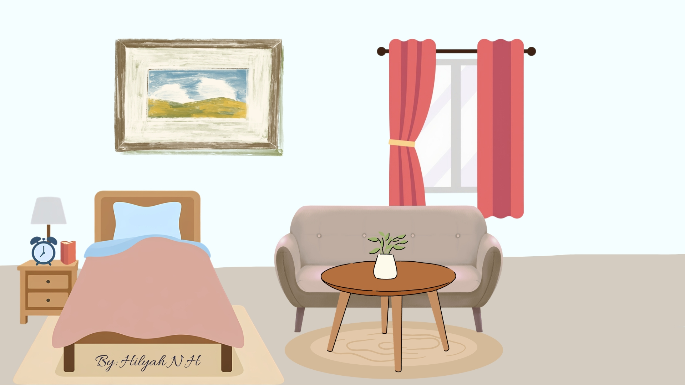
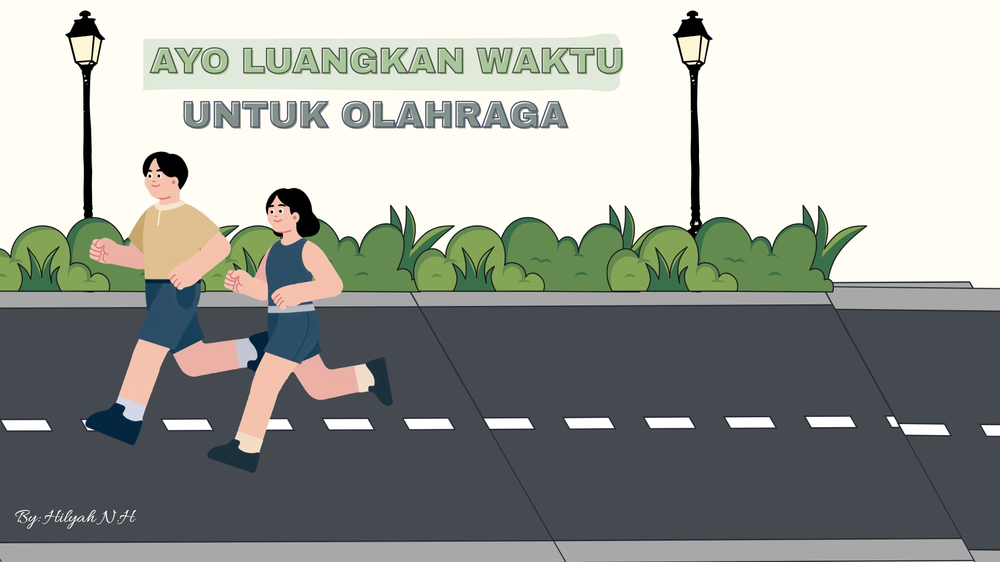
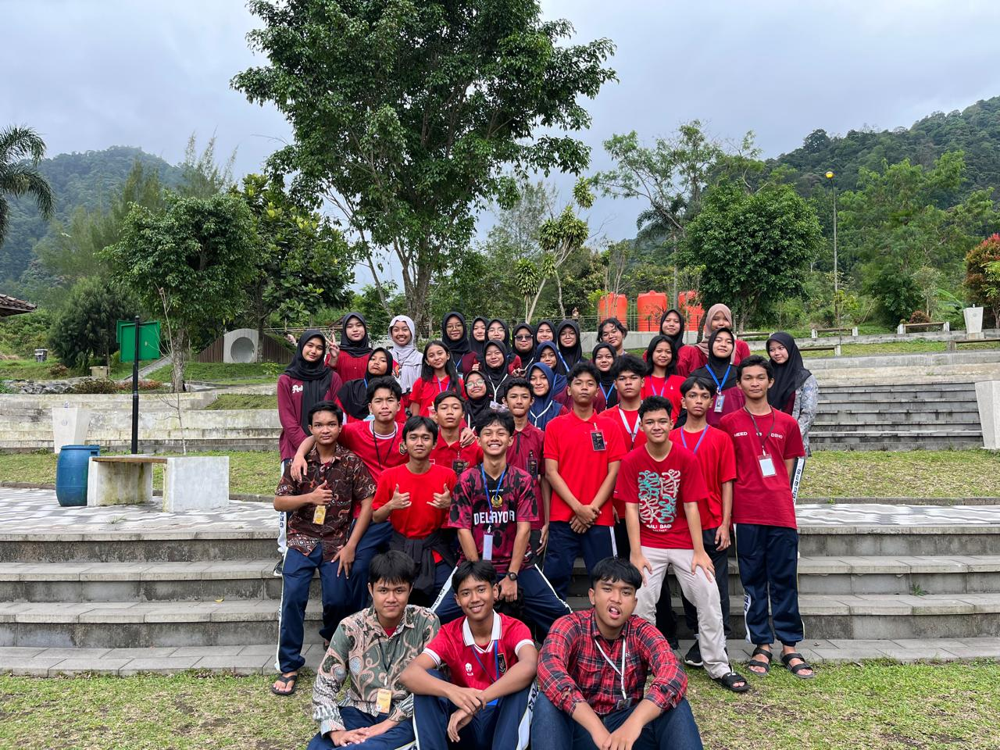
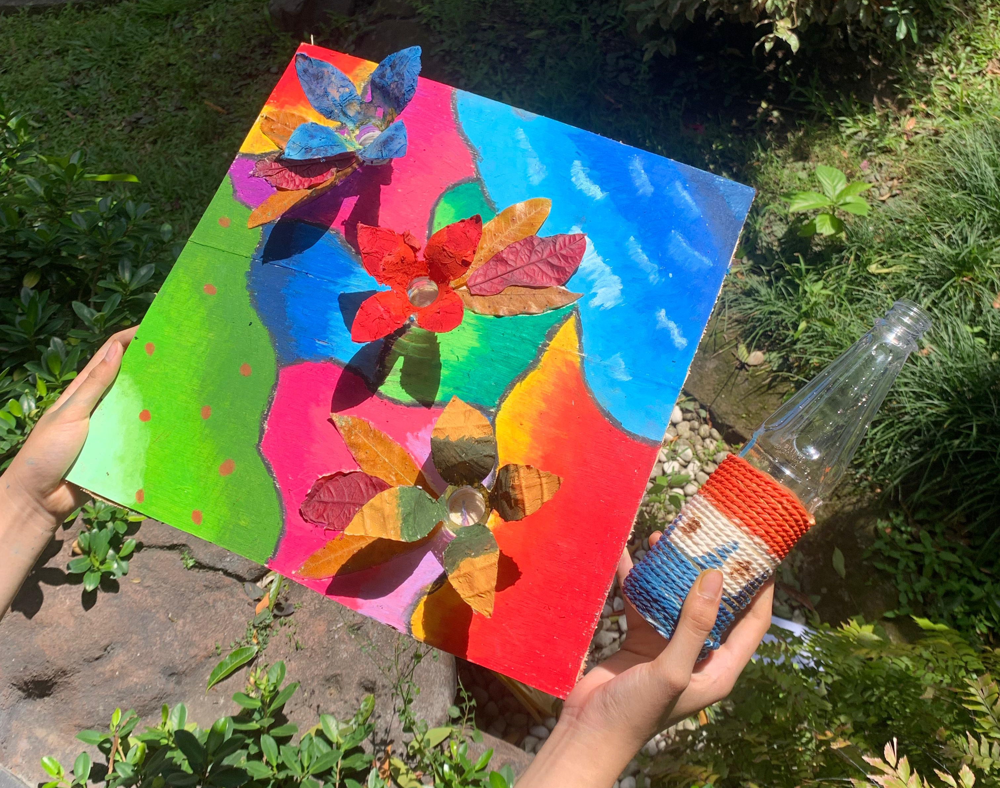

Istirahat Cukup
Istirahat penting untuk menjaga kondisi tubuh dan konsentrasi.

Olahraga Rutin
Menjaga kebugaran tubuh dan meningkatkan kesehatan setiap hari.

4 Sehat 5 Sempurna
Mengonsumsi makanan bergizi membantu menjaga tubuh.
Selamat Datang di Pola Hidup Sehat
Olahraga Rutin
Pentingnya Olahraga Setiap Hari
Olahraga merupakan aktivitas penting yang membantu menjaga kesehatan dan kebugaran tubuh. Melakukan olahraga secara rutin dapat meningkatkan stamina, menjaga berat badan, dan membuat tubuh lebih sehat. Olahraga ringan seperti berjalan kaki, jogging, bersepeda, senam, atau stretching dapat dilakukan setiap hari untuk menjaga kondisi tubuh tetap aktif dan bugar.
4 Sehat 5 Sempurna
Konsep ini mencakup 4 kelompok makanan sehat yang harus dikonsumsi setiap hari: Karbohidrat, protein, sayuran, dan, buah-buahan, ditambah susu sebagai pelengkap nutrisi. Karbohidrat adalah sumber energi utama bagi tubuh seperti nasi, roti, kentang, dan lainnya. Protein berperan dalam pertumbuhan dan perbaikan jaringan tubuh dapat ditemukan dalam daging, telur, dan ikan. Sayuran mengandung serat, vitamin, dan mineral penting, misalnya wortel, bayam, dan brokoli. Buah-buahan mengandung sumber serat, vitamin, dan antioksidan, seperti apel, pisang, dan jeruk. Susu sebagai nutrisi pelengkap mengandung kalsium untuk pertumbuhan tulang dan gigi anak-anak.
- Makanan Bergizi
- Gizi Seimbang

Aktivitas Positif
Contoh Kegiatan Positif untuk Meredakan Stres
Meningkatkan ibadah dan mendekatkan diri kepada Tuhan YME, memikirkan hal-hal yang menyenangkan seperti hobi yang sukai, membicarakan perasaan dan keluhan yang dihadapi dengan seseorang yang dapat dipercaya, melakukan kegiatan yang menyenangkan seperti hobi yang sesuai dengan minat dan bakat kita, dan menjaga kesehatan tubuh seperti berolahraga dan makan makanan bergizi.
Dengan melakukan contoh aktivitas positif tersebut, diharapkan agar dapat menurunkan stres. Banyak contoh lain juga yang meredakan stres seperti membaca buku, menonton film, mempunyai hewan peliharaan, dan lain-lain.
Langkah Kecil Membawa Perubahan.
Pola Hidup Sehat.
Kegiatan Positifku

Belajar di Alam Terbuka
Saya mengikuti kegiatan belajar di luar kelas bersama teman-teman di kawasan Kaliurang. Kegiatan ini memberikan pengalaman belajar yang menyenangkan sekaligus menambah wawasan tentang lingkungan sekitar.
Kelas: XE6
Tempat: Kaliurang

Membuat Karya Kreatif dari Bahan Alam
Saya mengikuti kegiatan Kemah Seni dengan membuat karya dari barang bekas. Saya menghias papan triplek menggunakan krayon, menempelnya daun-daun, serta memanfaatkan botol bekas menjadi hiasan bunga. Kegiatan ini melatih kreatifitas dan mengajarkan pentingnya memanfaatkan barang bekas menjadi karya yang menarik.
Kegiatan: Kemah Seni
Karya: Bunga dari botol bekas
Kunjungan ke Panti Asuhan
Bersama teman-teman sekelas, saya mengikuti kegiatan D'Comfair dengan mengunjungi Panti Asuhan di Sewon. Kegiatan ini bertujuan untuk berbagi kebahagiaan, mempererat rasa kepedulian sosial, serta memberikan pengalaman berharga dalam membantu sesama.
Event: D'COMFAIR
Tempat: Panti Asuhan